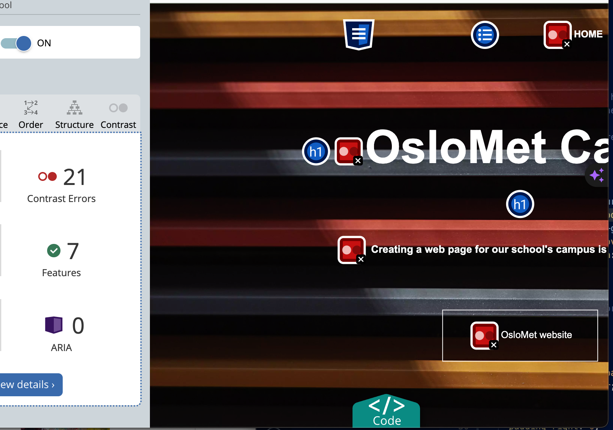
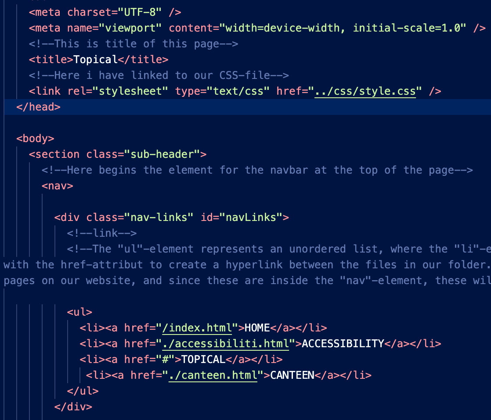

Accessibility test
Our first test on the index

This is the first test we did on the universal design
The universal design sufferd the same issues as with the first page.
Using WAVE
We chose to use WAVE evaluaton tool to test the automated accessibility test. WAVE provieded us with a clean and easy guide to see and understand our error and step-by-step guide to fix them. we were given feedback.
In our color chose in the navbar Wave gave the feedback that we had alot of Contrast errors. This was for our color choise in thge navbar and the footer. We chose orange and white and do belive that it looks really good and is easy to see and use. The tool also provided suggestions for ordered (ol) and unordered (ul) lists, consistently recommending improvements. Despite the repeated recommendation, we've opted to maintain our original structure, as it aligns with our design preferences. While a person could understand the context, an automated tool might l ack this nuanced comprehension
Here you can see how it the contrast really looks. it is readable and you can clearly use the navbar and understand the context of the webpage
Correct opening & closing-tags for every element and elements correctly structured in hierarchy. No element have duplicate of the same attribute, Each ID-value on any given page is unique
Our code
Our coding journey was a collaborative effort marked by enthusiasm and a hunger to learn. With little coding and webpage design experience as a group, we utilized class knowledge and online resources to create a functional website. The majority of our efforts were concentrated on the front page, where we delved into an excellent online source. This source not only provided valuable insights but also introduced us to intriguing CSS designs that fueled our creativity. Despite the challenges posed by our limited coding background, our commitment to meeting criteria and creating a professional-looking website remained unwavering. We acknowledged the learning curve and embraced the novelty of the experience. Our collective mission was to transform theoretical knowledge into a tangible, working website, and we successfully achieved that goal.